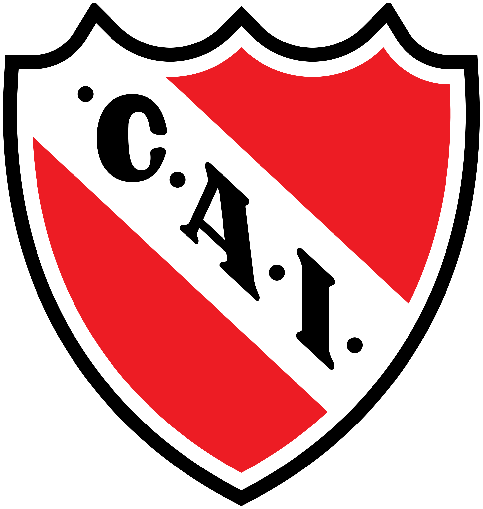
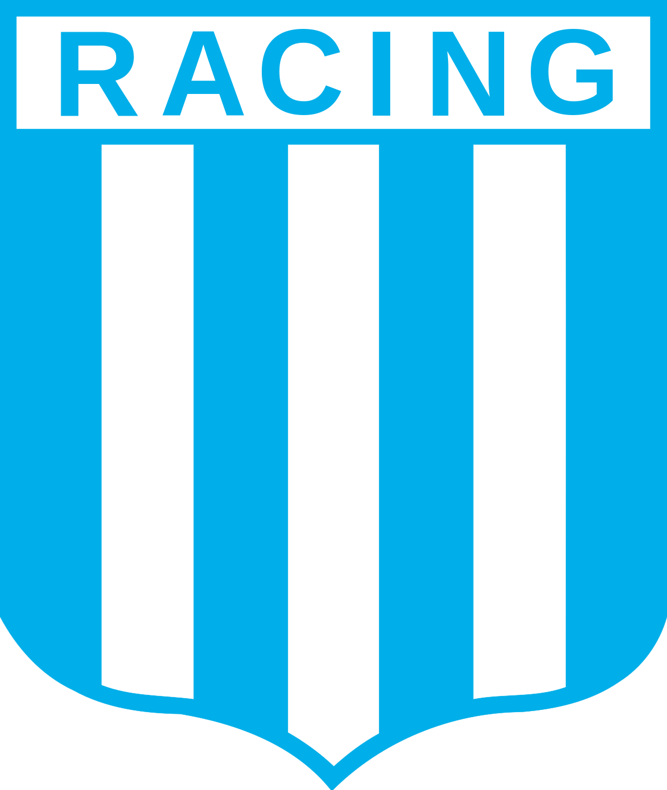
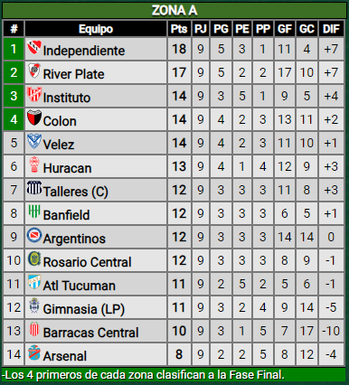
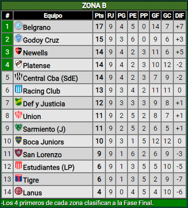

El Xeneize se medirá ante Fluminense el sábado 4 de noviembre a las 17 en el Maracaná, tambien sigue de fiesta al clasificar a semifinales de la Copa Argentina luego del empate y victoria por penales ante Talleres de Córdoba. En el medio de la espera por la final de la Copa Libertadores, gana comodamente 2 a 1 ante Union de Santa Fé de local y busca llegar a la parte final de la Copa de la Liga.
Ultimas formaciones de Boca:

El Rojo, sólido desde la llegada de Tevez como DT que se mantiene invicto en liga, ganan con goles de Rojas, González y Martínez se mantiene puntero de la Zona A de la Copa de la Liga luego de la victoria 3 a 0 contra Barracas Central. Los dirigidos por Carlos Tevez van 5 victorias y 3 empates en lo que va de liga, con la triste derrota por penales contra Estudiantes de la plata por Copa Argentina de por medio.
Ultimas formaciones de Independiente:

Racing, en caída libre desde la fecha de clásicos en la cual perdió 2 a 0 ante Independiente, el cual fue el último partido de Fernando Gago como DT de La Academia. Actualmente Racing lleva 4 partidos sin ganar a la espera de que llegue un nuevo entrenador.
Ultimas formaciones de Racing:

El Millonario rescató un punto como visitante pese a contar con un jugador de más durante todo el segundo tiempo. Miguel Borja y Rubén Botta, los goleadores del encuentro. Luego, dado a que Talleres empató se consagro como lider de la tabla anual y se clasificó a la Supercopa Internacional en la cual esperan rival.
Ultimas formaciones de River:

El ciclon pasando por un bajón anímico y futbolístico. Tras el 0-1 con Godoy Cruz, resultado que lo sacó de puestos de clasificación a la próxima edición de la Copa Libertadores. San Lorenzo habia empezado muy bien el año, sin embargo, la situación en la segunda etapa de la temporada es totalmente opuesta ganando 1 partido, empatando 6 y perdiendo 2 sumando el 33,33% de los puntos.
Ultimas formaciones de San Lorenzo:
Tabla de Posiciones

